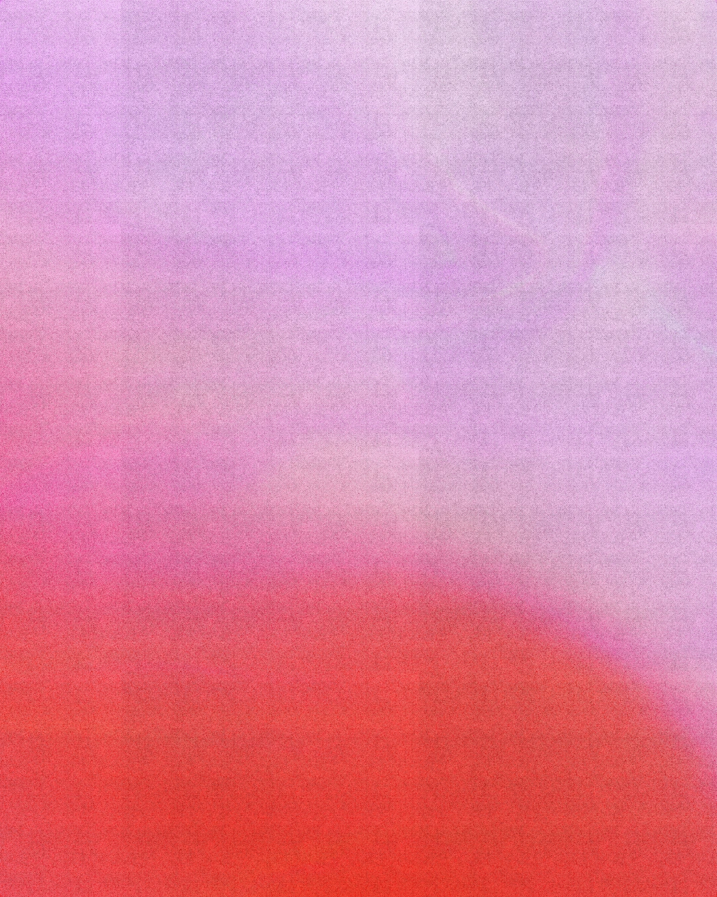
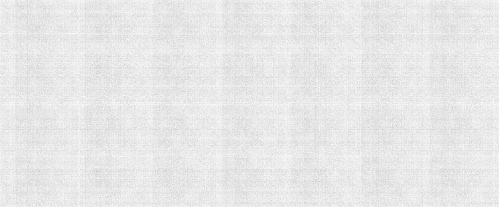
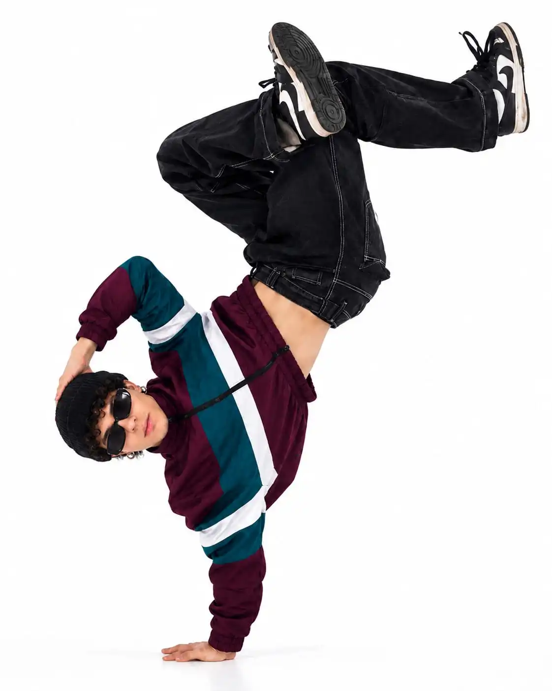
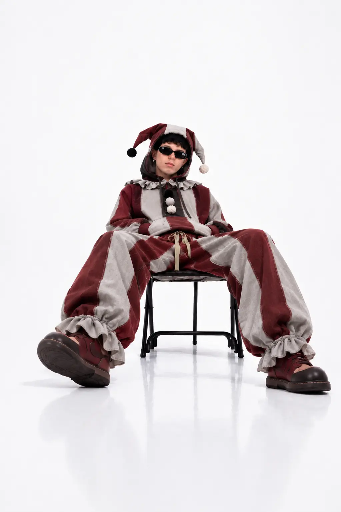
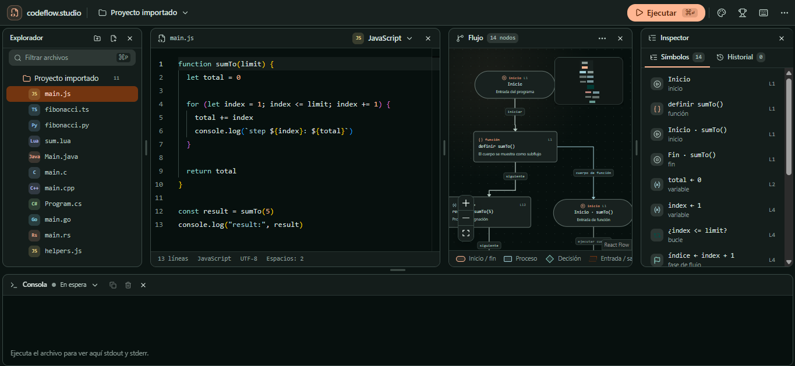
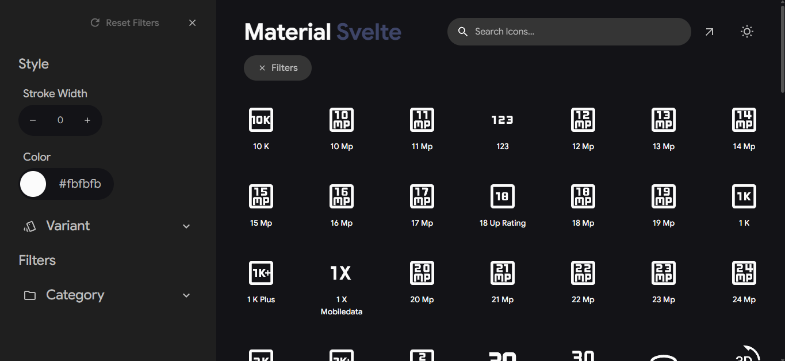
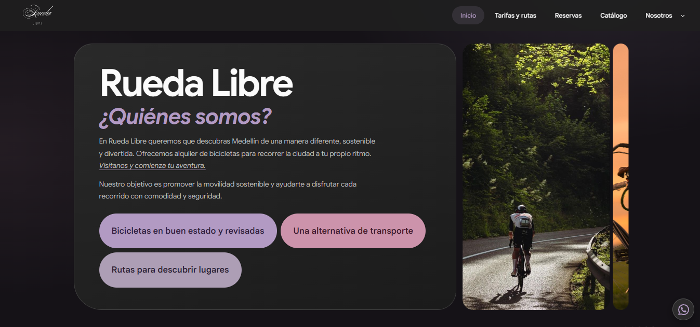
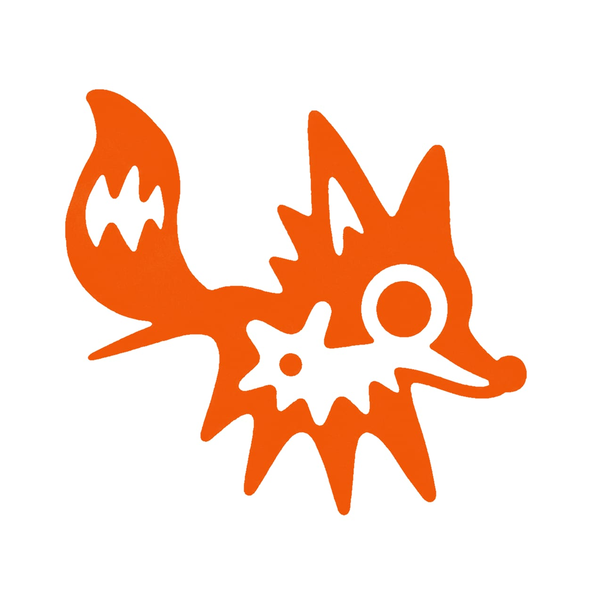

Disponible para nuevos proyectos
Código preciso,
diseño con alma.
Desarrollo productos digitales de principio a fin, interfaz, backend y datos. Y en paralelo, arte y danza. Dos oficios con el mismo criterio de detalle.
Sobre mí
Construyo cosas que funcionan y que, además, se sienten.
Soy Jheivy Silva. Diseño y desarrollo productos digitales completos: desde la interfaz que se ve y se toca, hasta el backend y los datos que la sostienen.
Fuera de la pantalla, mi cuerpo y mis manos también trabajan, dibujo, pinto y bailo. Esas disciplinas me enseñaron ritmo, composición y paciencia, y eso se nota en mi código.
- Disciplinas
- 3
- Capas del producto
- 4
- Nivel de detalle
- ∞


Disciplinas
Tres lenguajes,
una sola mirada.
Pasa el cursor sobre cada panel para explorar.
Del boceto a producción
Código
Interfaces rápidas y accesibles, APIs limpias y modelos de datos pensados para crecer. Del prototipo a producción.
Técnica y color
Arte
Dibujo, color y textura. Exploro la técnica del risograph y la composición como base de cada diseño.
Cuerpo en movimiento
Danza
Ritmo, cuerpo y expresión. La disciplina del ensayo es la misma que uso para pulir un producto digital.
Proyectos
Trabajo seleccionado

Codeflow Studio
Diagrama y ejecuta código de distintos lenguajes en el navegador. Visualiza el flujo de cada programa, exporta los diagramas y gana logros mientras aprendes.

Material Design Icons Svelte
Componentes Svelte 5 con los iconos SVG oficiales de Material Symbols. Tree-shakeable, sin fuentes ni dependencias en runtime, en cinco estilos.

Rueda Libre
Alquiler de bicicletas en Medellín: rutas, catálogo de ciclas, tarifas y reservas en línea. Sitio multipágina con Vite y SCSS.
@panmdaa/server
@panmdaa/server
Servidor HTTP y WebSocket en TypeScript, sin dependencias: router radix compilado, middleware, HTTP/2 y WebSocket con compresión.
html-box
html-box
Utilidades tipadas para el trabajo diario con el DOM: View Transitions, SafeZone, Pointer, formularios y más, en módulos independientes.
Galería
Arte & danza
Fragmentos de mi trabajo fuera del código: risografía, ilustración y danza.


Stack
Herramientas de trabajo
Frontend
- Svelte
- Tailwind CSS
- React
- TypeScript
- Angular
- Responsive Design
- UI Development
Backend
- Node.js
- C
- C++
- Java
- Python
- Lua
- PHP
- Laravel
- OCaml
- Rust
Data & Database
- SQL
- JSON
- Data Modeling
- Database Design
- Data Management
Tools & Workflows
- Git
- GitHub
- Linux
- CMake
- LLVM
- Vite
Proceso
-
Entender
Escucho el problema, al usuario y los objetivos antes de abrir el editor.
-
Diseñar
Boceto, color y composición. Cada decisión visual tiene una razón.
-
Construir
Código limpio de punta a punta: interfaz, servidor y base de datos.
-
Pulir
Ensayo hasta que el detalle desaparece y solo queda la sensación.